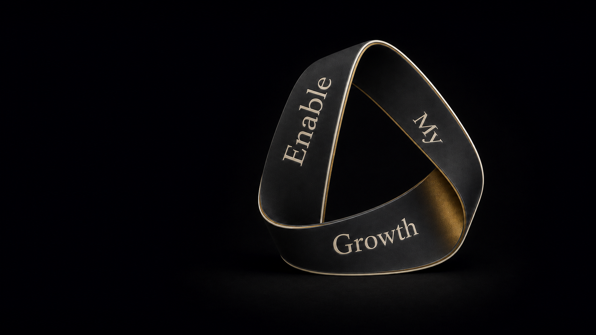

01
Context before interpretation
Understand the setting that makes a behavior, signal, or choice meaningful before deciding what it means.
Perspective · Judgment · Growth
Structured thinking for leaders and organizational decision-makers who want to examine context, evidence, and assumptions before reaching consequential conclusions.

The recurring pattern
Capability is not the constraint. The constraint is how the situation is being seen — which assumptions are invisible, which conditions are unexamined, and which conclusions are being reached before the evidence justifies them.
Enable My Growth exists to improve that quality of judgment. Not by replacing professional experience with a process, but by giving it enough structure to distinguish observation from interpretation, evidence from confidence, and conviction from pressure.
The doctrine
Understand the setting that makes a behavior, signal, or choice meaningful before deciding what it means.
Separate what is observed from what is inferred. Keep confidence and certainty distinguishable.
Ask what must be true before commitment becomes responsible rather than premature.
Use structure and tools to strengthen judgment — not to replace the person accountable for it.
Three movements
Widen the frame, question the default explanation, and distinguish signal from story before settling on a meaning.
Give evidence, alternatives, uncertainty, and consequences a visible place in the reasoning — before the pressure to conclude.
Turn decisions into learning by examining not only outcomes, but the quality of judgment that produced them.
Featured insight
When a decision or behavior disappoints us, we often locate the failure in the person. A wider view asks which conditions made that outcome understandable — and what must change before a different outcome becomes likely.
Explore all insights
Founded and led by Feras Banna
The work begins with a real situation — not a predetermined service.
Feras works with senior leaders and organizational decision-makers to improve the quality of judgment surrounding consequential choices. The method may involve assessment, facilitated dialogue, advisory work, development, or a deliberately combined approach. The context determines the form.
Begin with the situation
Bring the decision, the tension, or the context. We can determine the useful form of work from there.
Begin a conversation